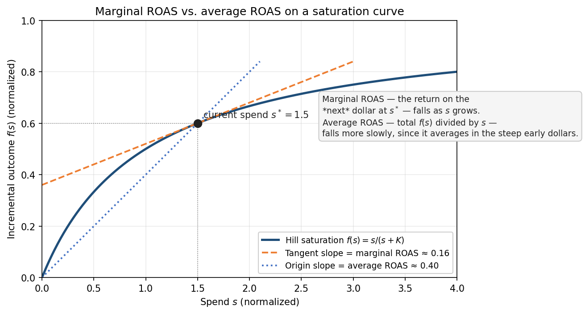
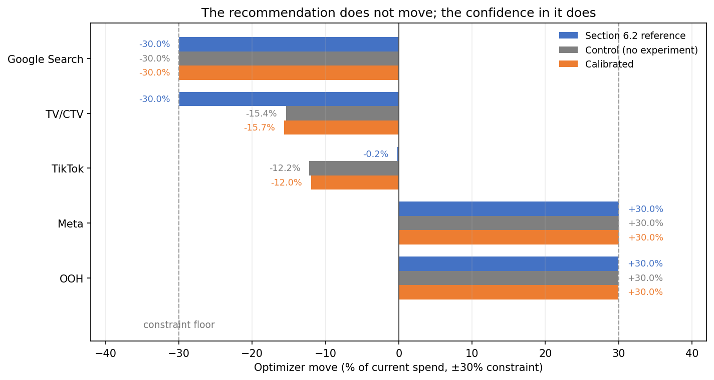

6.4 実験によるMMMの較正
日本語版について
このページは英語版 Marketing Science in Python のAI翻訳です。英語版を正本とし、差異がある場合は英語版を優先してください。コード、Notebook、画像内の文字は英語のままです。 英語版を読む
Section 6.3では、Section 6.2のモデルが推定しかできなかったものを測定した。8つのテスト市場でGoogle Searchを30%削減すると、削減1ドルあたり0.200の売上を失い、95%区間は[0.040, 0.361]だった。モデルはSearchのROASを3.53、90%信用区間を0.39から10.29としていた。並べて読むと、モデルは18倍も外れたように見える。本当にそうだろうか。
そうではない。理由は2つある。第一は推定対象である。実験は、30%削減で取り除かれるSearchの最後の支出のリターンを測った。モデルの代表値は、ゼロから平均した全支出のリターンである。実験と同じ問い、すなわち8週間の30%削減が何を失うかをモデルに尋ねると、答えは2.54、90%信用区間は[0.28, 7.21]となる。差は18倍から13倍へ縮まり、2つの区間は接する。実験側は0.361まで、モデル側は0.28まで届く。しかし差は解消しない。
第二の理由は、モデルのSearchの数値が、実のところ証拠ではなかったことだ。3年間の履歴でSearch支出はほとんど動かなかったため、尤度が語れることは少なく、事後分布は季節性の傾きを加えた事前分布にすぎない。事後分布の服を着た事前分布である。モデル自身の数値では、Searchの限界ROASは2.83で閾値2.50の損益分岐を超えたが、それでも5チャネル中で最弱だったため、オプティマイザーは削減した。実験によれば、どちらの基準も超えない。テストがモデルを採点できるよう、モデルの予測はテスト前に記録していた。採点結果は、モデルは行動に移すには不確実すぎ、しかも自身の区間の端で間違っていた、というものだ。この実験はSearchに関する初めての設計ベースの因果的証拠であり、その不確実性は支えるべき意思決定に比べて小さい。
この例の成果は売上なので、MeridianのROIは数値上、売上ROASとなる。本文ではROASと呼び、コードではMeridianの名称を保つ。較正は、その証拠をモデルへ取り込む方法である。実験を事前分布へ変換し、再適合し、何が変わったかを見る。目的はモデルを実験に同意させることではない。よりよい因果的証拠が意思決定を変えるか、変えないならなぜかを明らかにすることである。

付属ノートブック： sec6.2_6.4_mmm_meridian.ipynbはSection 6.2と共通である。Step 14〜18では、テストに対するモデル自身の予測を記録し、実験推定値を事前分布へ変換し、モデルを再適合し、予算を再最適化する。
GitHubで見る
なぜ較正するのか？
MMMは全体像を見る。すべてのチャネル、全履歴、各反応曲線の形状である。しかし観測的に見ている。複数チャネルが一緒に出稿されたり、販促や季節需要とともにメディアが増えたりすると、尤度は何が売上を動かしたかを区別できない。モデルが売上をよく予測しても、チャネルのROAS事後分布は広いままとなる。Section 6.2のSearchで起きたのがこれである。適合はよいが、区間は行動に移すには広すぎた。
実験は、1つの期間、1つの運用点で、1つのものを見るが、それを因果的に見る。実験は代替ではなく錨である。その錨をモデルに入れれば、他のチャネル、曲線、履歴というモデルの強みが残りを担う。だからSection 6.3の証拠パッケージには、数値だけでなく推定対象と不確実性も含めた。
なぜ0.20をそのままモデルへ入れられないのか
Meridianのroi_mパラメータは平均ROAS、すなわちチャネルの総増分売上を総支出で割った値である。実験が測ったのは限界ROAS、すなわち現在の支出水準における反応曲線の傾きである。Section 6.2では、飽和曲線上で両者が異なる理由を示した。図 2 は1つの図で両者を示す。初期の1ドルは後半の1ドルより生産的なので、曲線が曲がり始めた場所では平均ROASが限界ROASを上回る。

それでも平均ROASの事前分布を0.20に設定するとどうなるか。ノートブックで試している。事後の平均ROASは従順に0.21へ動く。しかしモデルには曲線が残り、平均が0.20の曲線では限界値はそれより低い。較正モデルのSearch限界ROASは0.17となる。実験の測定値0.200、データに埋め込んだ0.213と合わない。オプティマイザーは限界ROASを使うため、誤差は意思決定を行う場所に正確に落ちる。
ここでのずれは14%で、無害に見えるほど小さい。しかしこれは間違いの性質ではなく、このチャネルの性質である。誤差の大きさはチャネルの平均リターンと限界リターンの差で決まり、Searchの曲線は緩やかである。真の限界値は真の平均値の0.61倍だ。Metaは0.75、TV/CTVは0.43、TikTokは0.27である。TikTokで同じ置換をすれば、モデルはほぼ4倍間違う。教訓は誤りが小さいということではない。その大きさは、たまたま誤りを犯したチャネルによって決まるということだ。
実験の推定対象は、較正するパラメータと一致しなければならない。Section 6.3のテストが測ったのは限界ROASである。Meridianには、まさにそのためのパラメータ化がある。
実験を事前分布へ変換する
Meridianでは、平均ROIではなく限界ROIに事前分布を置ける。その定義は局所的で、観測された支出経路に沿って支出を1%増やしたときのリターンである。削減テストが測ったのは、同じ運用点の反対側にある、支出の70%から100%までのブロックという、より広い対比である。これは平均ROIより限界ROIにはるかに近いが、同じ数値ではない。したがって実験はmROI事前分布を正確に観測するのではなく、錨として固定する。このデータではSearchの曲線が緩やかでキャリーオーバーが短いため、2つは丸め誤差の範囲、0.213対0.200にある。TV/CTVではそうならず、1.80対0.83となる。
3つの調整はGoogle自身の文書から、1つは本書独自のものである。中心を動かすのは期間だけだ。短いウィンドウではキャリーオーバーを取りこぼすため、点推定値を、ウィンドウが捉えたチャネルのアドストック重みの割合で割る。Searchのキャリーオーバーは半減期1週間と短いため、8週間のウィンドウで99.6%を捉え、中心はほとんど動かない。TV/CTVのような半減期6週間のチャネルでは、同じウィンドウで78%しか捉えず、補正が実質的になる。
残りは中心をずらさず幅を広げる。支出スケールは、実験の平均日次支出率をチャネル全体と比較する。8つのテスト市場は全国の約5分の1の率で稼働し、その割合が小さくなるほどペナルティが大きくなるため、ここでは他のすべてを圧倒する。新しさは、52週間の半減期で古い証拠を割り引く。このテストはモデル化期間が終わった6週間後に行ったので、古くなく、ペナルティはゼロである。1年前の結果なら、事前分布は実質的に広くなる。4つ目の調整はGoogleではなく本書独自である。実験は30%のブロック全体で曲線を平均したが、事前分布は現在の支出における傾きを表す。モデルはこの差について見解を持つが、その見解は実験が修正しようとしている適合から来ているため、中心を動かすのではなく事前分布を広げる。ノートブックは各項を計算して出力する。これらを合わせても中心は0.201のまま、標準誤差は0.075から0.161へ広がる。ほぼすべてが支出スケール項による。実験自体の精度は十分で、事前分布を広げたのは8市場がチャネル全体の5分の1だという点である。
GoogleのMeridian文書には、支出、新しさ、期間の調整を適用し、反実仮想が支出ゼロであるリフト実験からROI事前分布を作るCalibrationBuilderが記載されている。ここでは機械的には使わない。この実験にはゼロでない反実仮想があり、30%の局所対比を推定するため、同文書が警告する推定対象の不一致に該当するからである。代わりにノートブックでは変換の仮定を明示し、それらに対して意思決定が安定しているかを検証する。ノートブックはMeridian 1.6.2に固定している。
このパラメータ化では、すべてのチャネルの事前分布を同じ形で記述する。そのため他の4チャネルには弱い限界ROI事前分布LogNormal(-0.49, 0.90)を残す。これはSection 6.2の弱いROAS事前分布を限界スケールで表し直したものである。このパネルでは事後の限界リターンが事後平均リターンのおよそ半分だからだ。さらに平坦にしたくなる誘惑には抵抗する。飽和曲線上で限界ROIに拡散的な事前分布を置くと、平均ROIの上限がなくなり、未較正チャネルは役に立たないほど広い信用区間を伴って戻ってくる。
import numpy as np
import tensorflow as tf
import tensorflow_probability as tfp
from meridian import constants
from meridian.model import prior_distribution, spec
channels = list(data.media_channel.values)
target = channels.index("Google Search")
# Weak marginal-ROI prior for every channel, then the experiment on Search.
mroi_mu = np.full(len(channels), 0.2 + np.log(0.5))
mroi_sigma = np.full(len(channels), 0.9)
mroi_mu[target], mroi_sigma[target] = -1.8542, 0.7050 # centre 0.201, SE 0.161
prior = prior_distribution.PriorDistribution(
mroi_m=tfp.distributions.LogNormal(
loc=tf.constant(mroi_mu, dtype=tf.float32),
scale=tf.constant(mroi_sigma, dtype=tf.float32),
name=constants.MROI_M,
)
)
model_spec = spec.ModelSpec(prior=prior, media_prior_type="mroi", max_lag=12)事後要約を後から編集するのではなく、再適合する。較正対象チャネルは証拠へ近づき、よりよく識別されるはずだが、正確に0.200へ着地する必要はない。尤度、曲線、事前分布がすべて寄与する。1チャネルを狭めると、相関するチャネル間の寄与も再配分されるため、Searchだけでなく全チャネルと総予測を見る。
PyMC-Marketingのadd_lift_test_measurementsは別の方法を取る。支出変更を明示し、リフト観測を反応曲線に結びついた尤度項として追加する。増額・削減テストには直接的な適合方法である。パッケージではなく、推定対象の整合性とモデル構造で選ぶ。
負またはゼロに近いリフトも妥当な結果である。LogNormal事前分布では、ゼロ以下を中心とする証拠を表せない。推定値を小さな正数に切り上げるのではなく、適切な台を持つ分布族を使う。
何が変わったか？
モデルはいま、実験を組み込んでいる。公正に比較するため、3つの適合を使う。基準となるSection 6.2のモデル、実験なしで限界ROI事前分布へ切り替えた対照適合、較正後の適合である。地域テストを見たのは最後のモデルだけなので、最後の2つの差は証拠だけによる。
モデルと実験が同じものを測る1行、すなわち8週間のSearch 30%削減が何を失うかから始める。
| Google Search | 6.2の基準 | 前（対照） | 後（較正） |
|---|---|---|---|
| テストした削減の予測コスト | 2.54 [0.28, 7.21] | 1.57 [0.15, 5.52] | 0.20 [0.05, 0.49] |
| 平均ROAS | 3.53 [0.39, 10.29] | 2.55 [0.21, 9.25] | 0.27 [0.06, 0.71] |
| 限界ROAS | 2.83 [0.31, 8.28] | 1.76 [0.17, 6.36] | 0.22 [0.05, 0.54] |
| 相対半幅 | 1.41 | 1.76 | 1.13 |
| ガードレール | HOLD | HOLD | HOLD |
| オプティマイザーの移動 | −30.0% | −30.0% | −30.0% |
実験の測定値は0.200だった。埋め込んだ真値は限界0.213、平均0.35、テストした削減では0.200である。
点推定値はあるべき場所に着地する。Searchの限界リターンは1.76から0.22へ動き、埋め込んだ真値との差は0.01以内になる。テストした削減に対するモデル予測は1.57から0.20へ動き、測定値0.200と一致する。数値そのものについては、較正が機能した。
より興味深い結果は区間である。十分には狭まらないからだ。相対半幅は1.76から1.13へ動くが、ガードレールはHOLDのままである。

図 3 は、実際に何が動いたかを示す。基準曲線と対照曲線は、オプティマイザーが検討しうる全支出水準で1.5から3のリターンを示す。較正曲線は同じ範囲で約0.2を示し、実験点を通る。実験は1つの数値をわずかに動かしたのではなく、曲線を移動させた。
では、なぜ区間はまだ広いのか。実験の精度が低かったからではない。点推定値0.200に対して標準誤差0.075で、精密な測定である。幅は変換から生じ、そのほぼすべてが1つの項による。8つのテスト市場はチャネル全体の日次支出率の約5分の1で稼働し、その差だけで標準誤差がおよそ2倍になる。区間に残るのは、その市場で何が起きたかへの疑念ではない。国内の残りの地域も同じように振る舞うかへの疑念である。
この区別は、ガードレールが解除されること以上に価値がある。次に行う実験を明確にするからだ。より長いテストはあまり役に立たない。Searchのキャリーオーバーは8週間ですでに完全に捉えている。より多くの市場でのテストなら役に立つ。
一方、配分には意外な展開がない。そして、それこそが発見である。

Searchはすべての適合で下限にある。OOHとMetaは、すべての適合で解放された予算を受け取る。対照モデルと較正モデルの間で動いたのは、TV/CTVとTikTokの数十分の1ポイントであり、計画会議のノイズに十分収まる。較正はモデルが知っていることを変えたが、モデルが指す方向は変えなかった。
Section 6.3から本章に残された問いが1つある。Searchの最後の30%が元を取れるかではない。取れないことはわかっている。その1ドルが他の場所でもっと稼ぐかである。較正モデルが答える。Searchの限界リターン上限は0.54で、他の全チャネルの区間下限は0.95を上回る。0.22のリターンに対する相対半幅1.13は、金額では狭くても比率では広いため、ガードレールの幅ルールはまだHOLDを示す。ガードレールはモデルが単独で行動する場合に書かれた。この意思決定はモデルだけに依存しない。実験の閾値が削減を決め、ポートフォリオ比較が予算の移動先を決める。
これは明言する価値がある。較正が答えを発見するものだと説明しがちだからである。しかし、そうではない。Section 6.3の閾値ルールですでに今四半期の削減は決まっていた。実験の95%区間上限は0.361、損益分岐ROASは2.50で、この数値を合理的に解釈しても支出維持を支持できない。較正によって得たのは、この証拠を今回以降のすべての配分に持ち越すモデル、8倍高かった数値が正しくなった限界推定値、次のテストが何でなければならないかという正確な記述である。
Section 6.3の保守的な幅、すなわち16市場ではなく8つのマッチドペアでクラスタ化した標準誤差でも同じ較正を行うと、限界推定値は0.23へわずかに動くだけで、相対半幅は1.46となる。判定は変わらない。配分も変わらない。正当化可能な両方の幅に耐える推奨なら会議へ持ち込める。その間で反転するなら、証拠がまだ決着をつけていないとわかる。
較正の目的は、MMMを実験に同意させることではない。よりよい因果的証拠が意思決定を変えるかを見ることである。
較正後の計画で行動する前に
レビュー会議で問うべき順番に、4つの問いを示す。
- 推定対象の整合性。 実験は、同じ成果、同じ対比、そして推奨が実際に訪れる運用点を測っているか。
- 実験の信頼性。 意思決定に必要な検出力があり、設計どおり配信され、波及とカレンダーショックがなかったか。
- モデルの健全性。 再適合後も、適合、反応曲線、他チャネルは妥当か。
- 意思決定の安定性。 正当化可能な変換幅の範囲で、推奨行動は維持されるか。その間で反転するなら、点推定値が何を示しても証拠は意思決定を解決していない。
データ品質と一般的なモデル検証はSection 6.2で扱っており、ここで繰り返す必要はない。
学習ループとしての較正
すべてのチャネルで実験する必要はない。支出が重要で、モデルの区間が広く、結果が行動を変えうる場所をテストする。Section 6.2の意思決定カードのように、テスト前にモデル予測を記録し、プログラムが自身の較正を測れるようにする。次の配分前にモデルを更新し、次の不一致に次のテストを選ばせる。
重要なポイント
- 推定対象を一致させ、移植ではなく変換する。限界の測定値は限界パラメータに置き、キャリーオーバーを補正し、スケールに応じて幅を広げ、実験の不確実性も一緒に運ぶ。
- 較正対象チャネルだけでなくシステム全体を再適合する。較正によりSearchの限界リターンは真値の8倍から、ほぼ正確な値へ動いた。
- 意思決定が変わるかで判断する。区間はガードレールを解除できるほど狭まらず、配分も動かなかった。それが発見であり、次のテストを明確にする。